COVID-19 Analysis for Brazil¶
This section contains analysis done for Brazil.
Brazil: country-wide analysis¶
Bayesian death count modelling¶
It is known that there is a heavy under-reporting of cases in Brazil due to lack of testing capacity (this was acknoledged by the government), therefore using confirmed cases poses difficult challenges. I decided to focus this analysis on the deaths, as they seem to be less impacted by the lack of the testing capacity.
To model the death counts I used a Negative Binomial likelihood, the same distribution used in the work Estimating the number of infections and the impact of nonpharmaceutical interventions on COVID-19 in 11 European countries by Imperial College London.
The negative binomal distribution is interesting because it is a discrete distribution and can be used to model over-dispersion as Poisson assumes \(\mathrm{E}[x] = \mathrm{Var}[x]\), therefore we can have more flexibility to model variance separately.
The priors of the model are described below:
The model is an exponential model as it is a very good approximation due to the natural phenomena that arises from the nature of viruses transmission dynamics. The model is:
Where \(\beta\) is the growth coefficient and \(t\) is the time index. The model in plate notation is also shown below:
Sampling the posterior of these models without doing reparametrization can be complicated due to the shape of it as shown below:
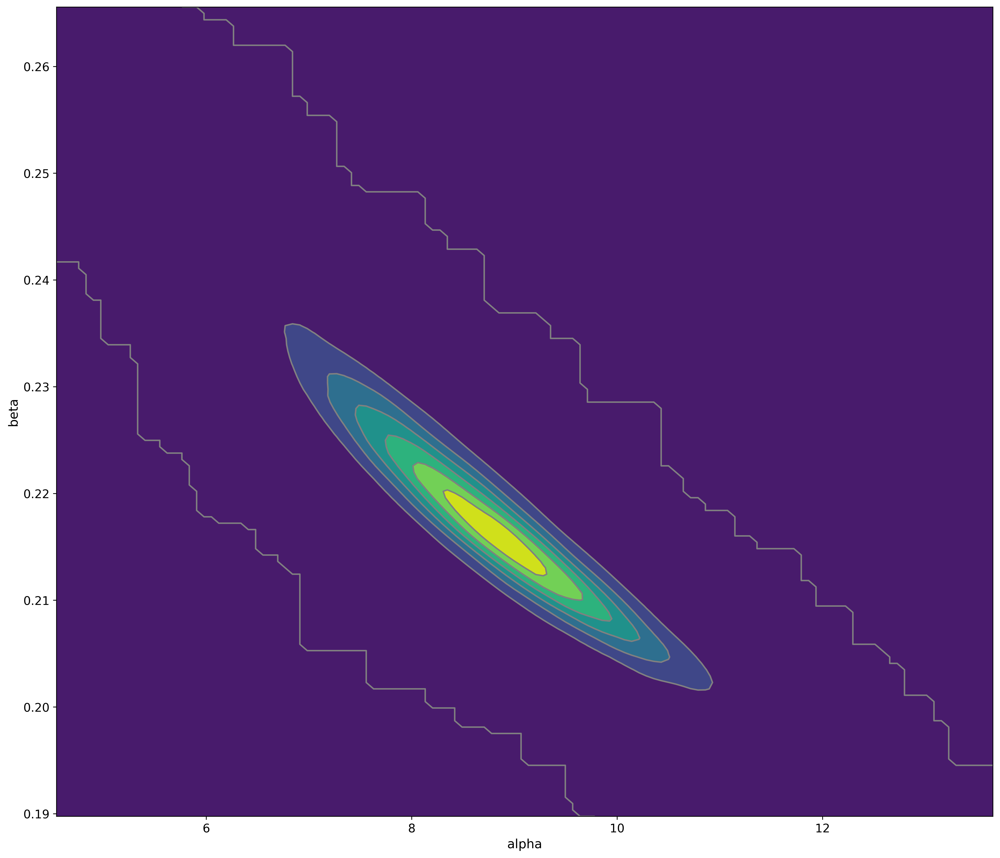{kind=link}
However, due to the lack of time, I’m still sampling this posterior. I use the MCMC Hamiltonian Monte Carlo (A Conceptual Introduction to Hamiltonian Monte Carlo) with at least 4 chains (68k samples, including the tuning steps).
Warning
This model doesn’t model the effect of interventions, at some point in time it will cease to be calibrated due to the effect of non-pharmaceutical interventions made by the government.
Note
This model uses data from the official government website.
Bayesian ICU (UTI) occupancy forecasts¶
This model is a very simple bayesian exponential regression for a discrete negative binomial distribution with the following priors:
And the following model diagram:
Note
This model uses data from the official SMS-POA website.
04/April – Severe Acute Respiratory Syndrome (SARS) cases in Brazil (Fiocruz)¶
These are plots using data from Fiocruz (see below for the link of the website with this data).
Cases per year and per epidemiological week
In this plot, we have Fiocruz data since 2017 until 2020. We can see a huge increase of the hospitalizations after the beginning of March and after the first detected case of COVID-19 in Brazil.

Note
Note that due to the COVID-19 outbreak, more people went to the hospitals to search for assistance, so there is a inflation there as well. Also note that the fact that the interventions also reduces the basic reproduction number of other viruses, it will also have an effect (very difficult to measure) on this plot as well, by deflating the traditional number of cases.
Absolute difference of cases per states in Brazil
This plot is a little more complex to understand:
In the left panel we have the absolute difference of cases from the epidemiological week 13th between 2019 and 2020. As we can see, the state of São Paulo (SP) is the one with the largest difference when compared with other states, clearly showing the evidence of COVID-19 patients.
On the right panel, we have have the number of COVID-19 confirmed cases per state in Brazil (until April 4th). As we can see, there is a clear correlation of differences in the cases on the left panel with the COVID-19 cases on the right panel.
Interesting cases here are RS and DF (among others). When we compare the differences in RJ vs RS, we can see that they are very similar, however, when we look at the number of cases, RJ has much more cases than RS, an evidence that can tell that the under-reporting in the RS is potentially much higher than in the RJ.

Note
This model uses official data from Fiocruz website.
07/April – Death count analysis and forecast¶
Forecast from the model
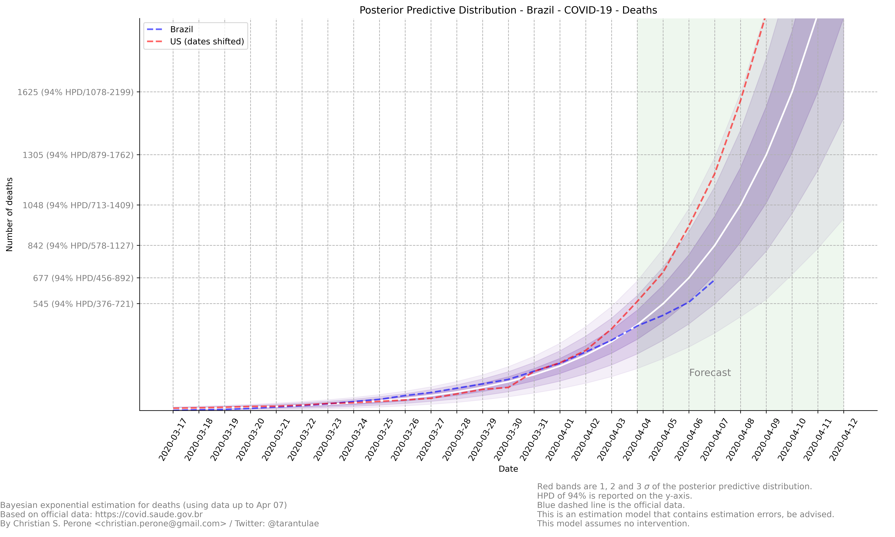{kind=link}
Growth coefficient estimation

Sampling diagnostics


See also
This model uses the modelling approach described at Bayesian death count modelling.
08/April – Death count analysis and forecast¶
Forecast from the model

Growth coefficient estimation

See also
This model uses the modelling approach described at Bayesian death count modelling.
09/April – Death count analysis and forecast¶
Forecast from the model

Growth coefficient estimation

See also
This model uses the modelling approach described at Bayesian death count modelling.
09/April – Death count reported by government vs notary’s offices¶
These are plots showing the difference in the COVID-19 death counts for the deaths that were registered on brazilian notary offices and compared with the deaths reported by the government. Data until April 8th.
Plots for different states of Brazil


For São Paulo (SP) and Rio de Janeiro (RJ)

Note
This plot used data from official government website and from the notary offices open data portal. Note that the notary offices includes also deaths that were not yet COVID-19 confirmed together with COVID-19 confirmed.
10/April – Death count analysis and forecast¶
Forecast from the model

Growth coefficient estimation
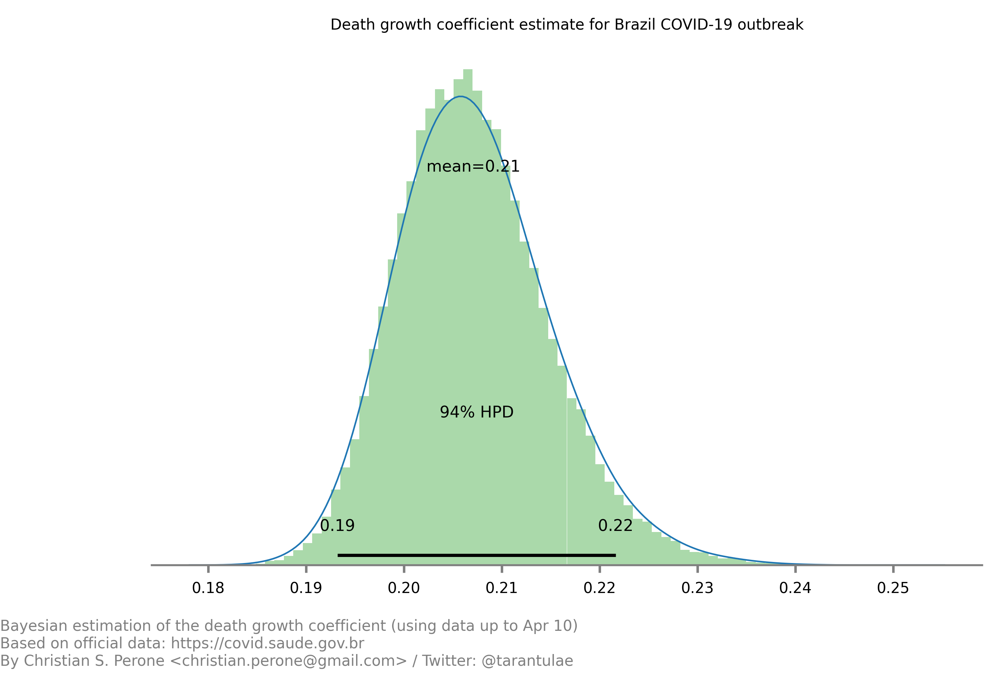{kind=link}
See also
This model uses the modelling approach described at Bayesian death count modelling.
11/April – Death count analysis and forecast¶
Forecast from the model

Growth coefficient estimation
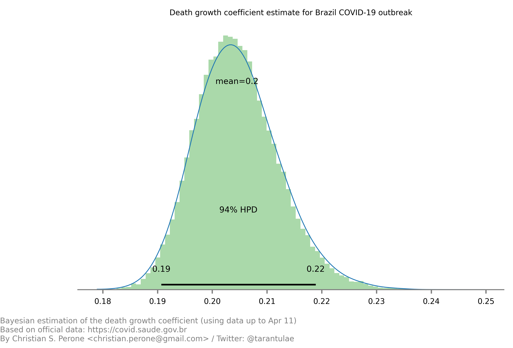{kind=link}
See also
This model uses the modelling approach described at Bayesian death count modelling.
12/April – Death count analysis and forecast¶
Forecast from the model

Growth coefficient estimation

See also
This model uses the modelling approach described at Bayesian death count modelling.
13/April – Death count analysis and forecast¶
Forecast from the model

Growth coefficient estimation

See also
This model uses the modelling approach described at Bayesian death count modelling.
17/April – Death count analysis and forecast¶
Forecast from the model

Growth coefficient estimation
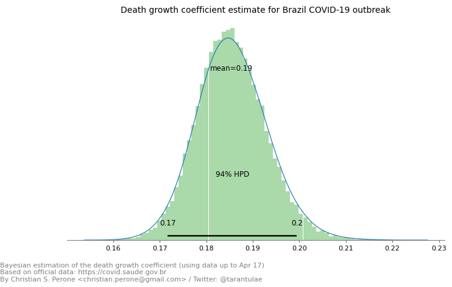See also
This model uses the modelling approach described at Bayesian death count modelling.
04/May – Daily death count analysis and forecast¶
Forecast from the model

Predicted daily deaths by COVID-19 for Brazil in May 5th: 782 (between 455-907 w/ HPD 50%).
See also
This model uses the modelling approach described at Bayesian death count modelling.
24/May – SIVEP deaths and ICUs¶
Graph visualization
This is a graph plot of the SIVEP date transitions for confirmed COVID-19 patients who went into an ICU and died. Only patients with dates filled are represented in this plot. The DT_SAIDUTI was not used as it is unclear how it was filled.
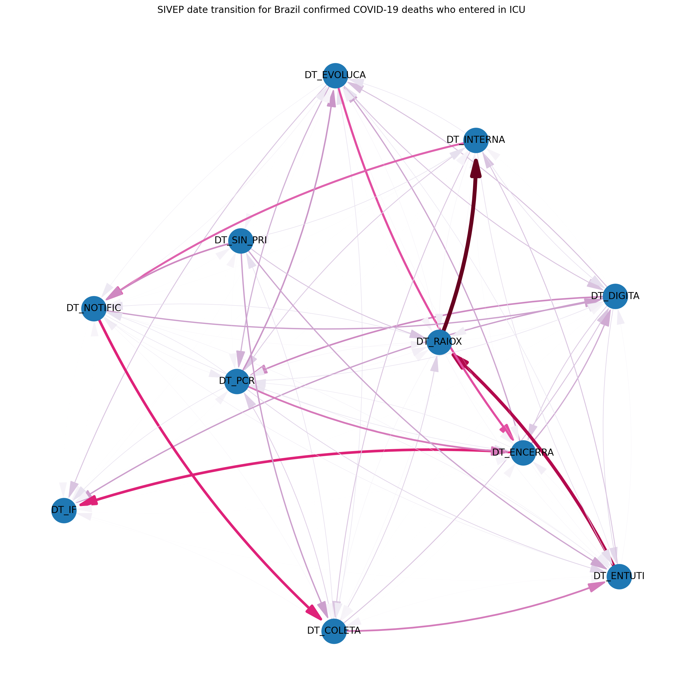{kind=link}
Graph visualization
This is a graph plot of the SIVEP date transitions for confirmed COVID-19 patients who went into an ICU and independent of the outcome (death/recover). Only patients with dates filled are represented in this plot.
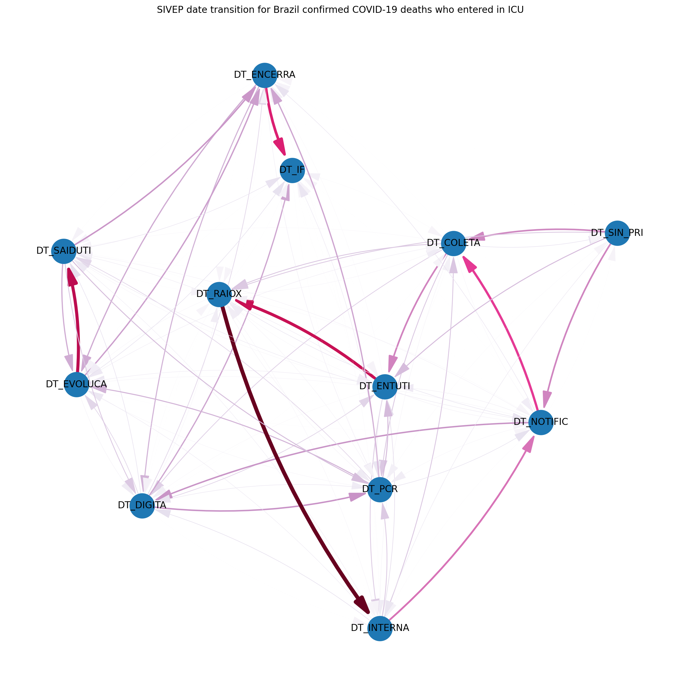{kind=link}
Note
This visualization used data from SRAG 2020. For more information about each label meaning, please look at the data dictionary.
State: Rio Grande do Sul (RS)¶
These are focused analysis on the state of Rio Grande do Sul/Brazil.
07/April – Mapping transmission through time¶
This is a short animation showing the cities with reported infections in Rio Grande do Sul (RS)/Brazil for the date range of March 10th until April 6th.
Note
This animation used data from Brasil.io, which is collected from the TI Saude RS.
09/April – Mapping transmission through time¶
This is a short animation showing the cities with reported infections in Rio Grande do Sul (RS)/Brazil for the date range of March 10th until April 9th.
Note
This animation used data from Brasil.io, which is collected from the TI Saude RS.
09/April – ICU (UTI) Occupancy Forecast for Porto Alegre/RS¶
ICU forecast
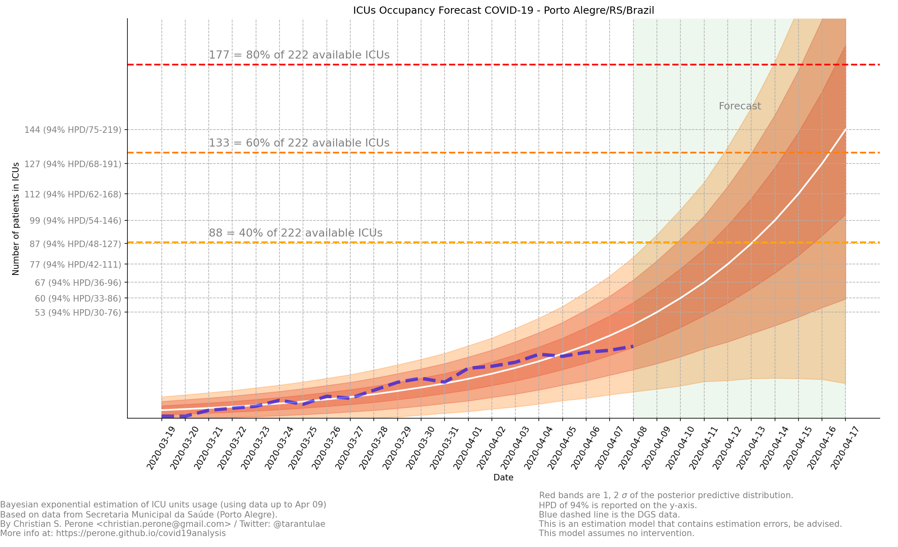{kind=link}
See also
This model uses the modelling approach described at Bayesian ICU (UTI) occupancy forecasts.
10/April – ICU (UTI) Occupancy Forecast for Porto Alegre/RS¶
ICU forecast
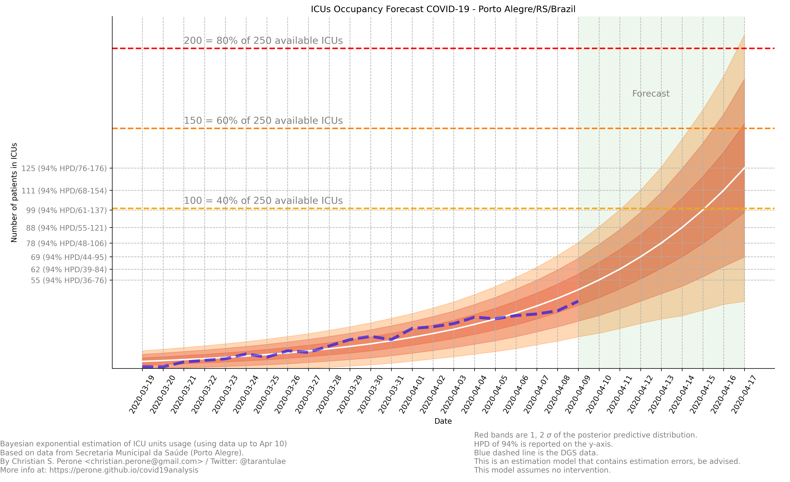{kind=link}
See also
This model uses the modelling approach described at Bayesian ICU (UTI) occupancy forecasts.
10/April – ICU (UTI) Occupancy Animation for Porto Alegre/RS¶
ICU forecast
See also
This model uses the modelling approach described at Bayesian ICU (UTI) occupancy forecasts.
11/April – Age distribution of infected cases by time for Porto Alegre/RS¶
This plot shows the age (binned in steps of 5) distribution of infected cases by the time of notification (y-axis). Data until Apr 10th 2020.

Note
This plot uses official data from Porto Alegre/RS reports until until Apr 10th 2020.
11/April – Gender distribution of infected cases by time for Porto Alegre/RS¶
This plot shows the gender distribution of infected cases by the time of notification (x-axis). Data until Apr 10th 2020.

Note
This plot uses official data from Porto Alegre/RS reports until until Apr 10th 2020.
11/April – Estimated instantaneous reproduction number for Rio Grande do Sul (RS)¶
This plot shows the estimation of the instantaneous reproduction number for Rio Grande do Sul (RS) / Brazil. This plot uses the method described in the work A New Framework and Software to Estimate Time-Varying Reproduction Numbers During Epidemics. We used the serial interval parameters similar to the ones used by CMMID with a \(\mu = 4.7 (3.7 - 6.0)\) and \(\sigma = 2.9 (1.9 - 4.9)\) with a log-normal distribution.
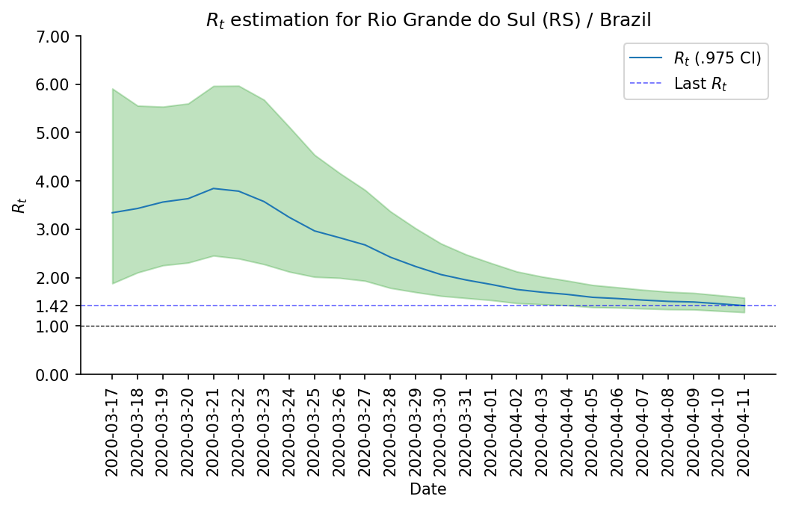Note
This plot uses official data from government, reports until Apr 11th 2020. This method is sensitive to changes in COVID-19 testing procedures and the level of effort used to detect cases. Therefore, changes in the testing efforts will introduce bias if the testing practices are not kept consistent. So please keep in mind these limitations, that are often not stated in many analysis around there.
12/April – What Rio Grande do Sul (RS) and Portugal have in common ?¶
Portugal and Rio Grande do Sul (RS), a state of Brazil, share not only the same language but also other similarities in the fight for COVID-19.
First, their populations are very similar, with 10.28 million in Portugal and 11.29 million in Rio Grande do Sul (RS). During the COVID-19 outbreak, they adopted similar measures and coincidentally some of them were taken at the same time, such as school closures and state of emergency.
This is an interesting comparison because Portugal had the first confirmed case on March 2nd while Rio Grande do Sul (RS) had the first confirmed case on March 10th.
Below you can see a plot with the estimated R number both for Portugal and for Rio Grande do Sul. Given all the limitations of this comparison (see below), it is nevertheless interesting to see that Rio Grande do Sul (RS) seems to have achieved a lower R value before Portugal probably due to the short time to take measures after confirming the first case.

Note
Limitations:
Population density is different;
Imported cases probably much higher in Portugal;
Different testing capacities (RS is doing ~400/day now);
Biased R estimation due to changes in testing procedures;
Interventions after state of emergency were a little different;
12/April – Mapping transmission through time¶
This is a short animation showing the cities with reported infections in Rio Grande do Sul (RS)/Brazil for the date range of March 10th until April 12th.
Note
This animation used data from Brasil.io, which is collected from the TI Saude RS.
12/April – ICU (UTI) Occupancy Forecast for Porto Alegre/RS¶
ICU forecast

See also
This model uses the modelling approach described at Bayesian ICU (UTI) occupancy forecasts.
15/April – Regarding results from UFPel study in Brazil¶
I just became aware of the results from UFPel in Brazil, where they did a randomized study with N=4189 valid tests in 8 cities of Rio Grande do Sul (RS). The results found anti-bodies in K=2 subjects, among N=4189 tested subjects.
What I found impressive, is that UFPel did a terrible job in presenting the results, by not incorporating the uncertainty into the results that they showed to the public. This was a terrible mistake they did, not to mention the rounding of some numbers (to make it look bigger ?).
Let’s go with the analysis: we have N=4189 and K=2, this means a proportion of 0.047% and not 0.05% that they reported. Secondly, they estimated a total of 5650 infections for the state by taking into consideration a population of P=11,300.000 (11.3M) people. So, P*(K/N) gives us 5395 with the proportion of 0.047% and not the 5650 that they got by rounding numbers.
Another issue that bothers me a lot is that they reported the results without proper confidence interval, which is of course huge due to the small sample size. But wait, there is more, the test has a sensitivity of 77% and a specificity of 98% (tested by themselves), so where is this uncertainty ?
I wonder what epidemiologists of UFPel are doing by being so naive in these calculations that are crucial to incorporate uncertainty and report it correctly to the public. The state is spending a lot of tests into this study, and those tests are tests that won’t be used for contact tracing and control, so it is very frustrating to see these analysis.
15/April – Mapping transmission through time¶
This is a short animation showing the cities with reported infections in Rio Grande do Sul (RS)/Brazil for the date range of March 10th until April 15th.
Note
This animation used data from Brasil.io, which is collected from the TI Saude RS.
{kind=link}
17/April – Age distribution of infected cases by time for Porto Alegre/RS¶
This plot shows the age (binned in steps of 5) distribution of infected cases by the time of notification (y-axis). Data until Apr 17th 2020.
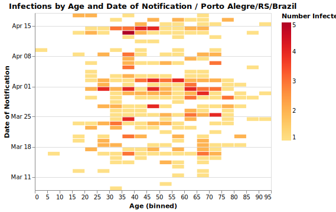{kind=link}
Note
This plot uses official data from Porto Alegre/RS reports until until Apr 17th 2020.
17/April – Gender distribution of infected cases by time for Porto Alegre/RS¶
This plot shows the gender distribution of infected cases by the time of notification (x-axis). Data until Apr 17th 2020.
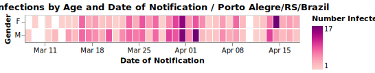{kind=link}
Note
This plot uses official data from Porto Alegre/RS reports until until Apr 17th 2020.
21/April – High-resolution elderly population density in Rio Grande do Sul¶
Just made a map of the elderly (>=60) population density in Rio Grande do Sul using Facebook’s high-resolution population maps (30 meters level resolution) with population allocation estimation using satellite imagery + machine learning. Working on an interactive version of it.
Click on it for a high-resolution version.

23/April – Mapping transmission through time¶
This is a short animation showing the cities with reported infections in Rio Grande do Sul (RS)/Brazil for the date range of March 10th until April 23th.
Note
This animation used data from Brasil.io, which is collected from the TI Saude RS.
25/April – Map of ICU units and confirmed cases in Rio Grande do Sul¶
This is a map with data from SES-RS where it shows the distribution of ICU units and current COVID-19 confirmed cases for each city.
Click on it for a high-resolution version.
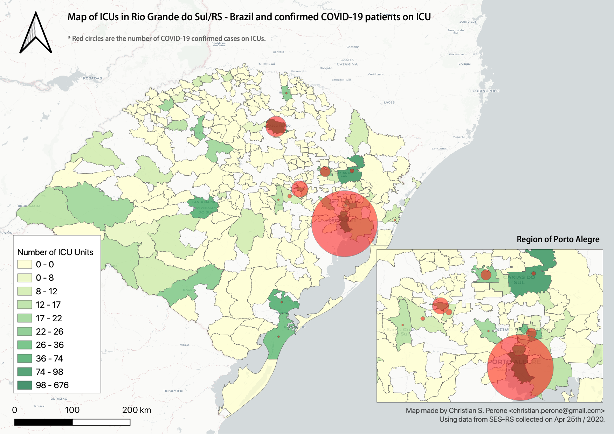{kind=link}
26/April – High-resolution elderly population density in Passo Fundo / RS¶
Just made a map of the elderly (>=60) population density in Passo Fundo using Facebook’s high-resolution population maps (30 meters level resolution) with population allocation estimation using satellite imagery + machine learning. This high-resolution data clearly shows its value when we look at where a nursing home with COVID-19 was found and the density showed by the map at that region.
Click on it for a high-resolution version.

03/May – ICU ocuppancy on Porto Alegre/RS and Portugal¶
Just saw this incredible similarity of ICU occupancy of Portugal and the city of Porto Alegre/RS in Brazil. The occupancy count was standardized and Porto Alegre dates were shifted by 4 days.
Click on it for a high-resolution version.

05/May – Mapping transmission through time¶
This is a short animation showing the cities with reported infections in Rio Grande do Sul (RS)/Brazil for the date range of March 10th until May 5th.
Note
This animation used data from Brasil.io, which is collected from the TI Saude RS.
24/Jun – R(t) estimation for Porto Alegre/RS¶
This is currently my best estimate for the R(t) in Porto Alegre using the scarce data made available by the state.
The method used is the same used for the states in Brazil, please see the main page for the details. This method was chosen due to its proven performance on other outbreaks and a relative robustness to under-reporting;
The estimation is made by the symptom onset, expected by the method by the weighting of the serial interval (national level I use the confirmed case dates);
No imported cases were taken into consideration;
To adjust for the right-censoring of the incidence by the symptom onset, I estimated a gamma distribution from the delays of confirmation and symptom onset dates, sampling then a posterior for this distribution;
For each sample of the posterior, I then parametrized a negative binomial distribution to account for the uncertainty of the adjustment, this distribution is parametrized by the CDF of the estimated gamma;
To propagate the uncertainty of the right-censoring I did a fit of 1000 models for the R(t) gamma distribution estimation and then later sampled from these 1000 different models to compute the posterior statistics such as the mean, posterior intervals, etc;
Here is the analysis. In the first plot in the top you have the R(t) estimation with green and red lines showing when there was interventions such as closures of universities, restaurantes, etc, and when they were relaxed or partially relaxed, the transparency at the end of the plot is to denote the uncertainty of the recent estimates as it is impossible to adjust for the right-censoring without including bias.
In the second plot (2nd row), you have the incidence by symptom onset and a green estimation of how it would look like without right-censoring, as some people already developed symptoms but were not confirmed yet, the green shades are the uncertainty of the negative binomial and the posterior of the estimate from the delay distribution.
In the bottom (last row), you have the occupancy of the ICUs in Porto Alegre. Please note that Porto Alegre is a hub that receives patients from multiple cities, however we don’t have data how many people are in these ICUs that are not from Porto Alegre, we only have this data for some days, as shown in black bars. As you can see, it seems that the growth in Porto Alegre/RS seems to be proportional to the region growth as well, which is not surprising given the commute dynamics of the region, mobility, etc.
Unfortunately we don’t have enough date from the state to do a better analysis and neither seems that state is showing their analysis, or are not computing the R(t) estimates, which is bad for both situations. Anyway, I think we will probably have the data in 2021, after the end of the outbreak.
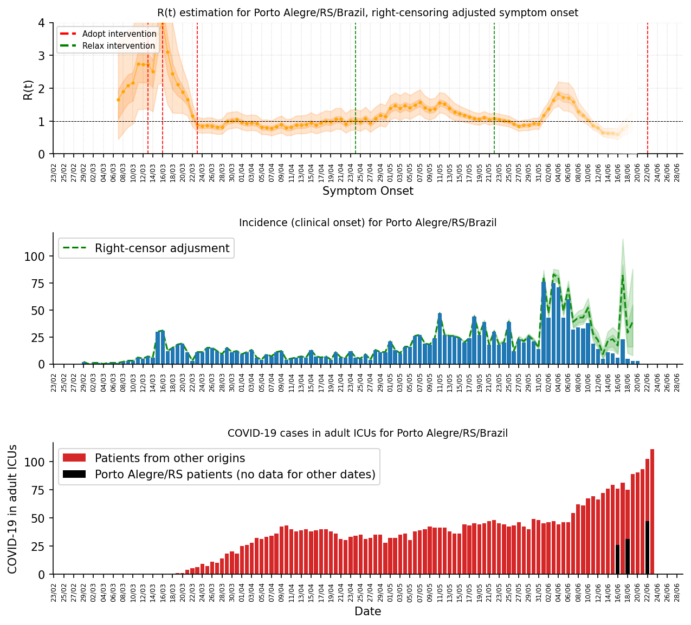{kind=link}
The image below shows each patient on the ICUs in Porto Alegre/RS, last updates from SIVEP-Gripe (23/June):
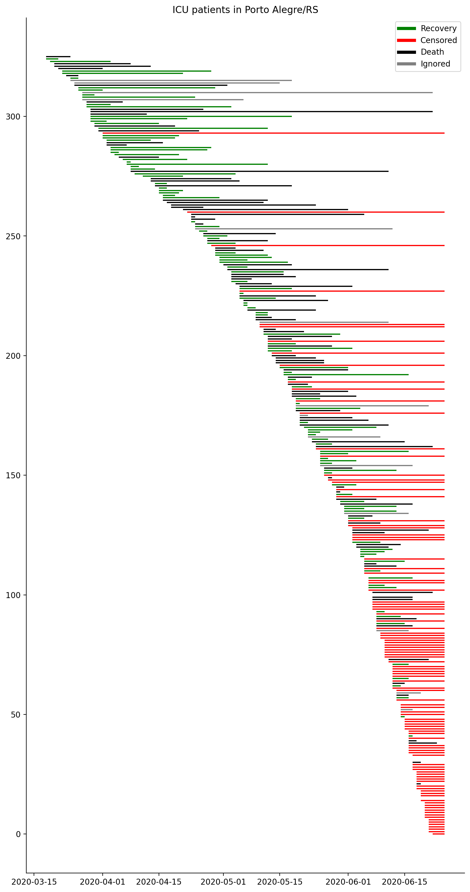{kind=link}
{kind=link}